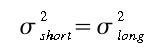

The first step is to fit a function which approximates the annual oscillation and the long term growth in the data. The long term growth is represented by a polynomial function and the annual oscillation is represented by harmonics of a yearly cycle. This function can be fit to the data using methods of general linear least squares regression (that is, linear in its parameters) and can be solved by a variety of routines. The routine used in this program is LFIT (Press et al., 1986). This routine also returns the covariances of the parameters so that an estimate of the uncertainty of the fit can be made.
Equation 1: Function fit to the data.
where k is the number of polynomial terms, and nh is the number of harmonics in the function. Typical values used in CCG are 3 polynomial terms (a quadratic) and 4 yearly harmonics. These values are changed in the "Edit - Parameters" dialog.
The next step is to calculate and filter the residuals of the original data about the function. These residuals are filtered in order to define interannual and short term variations that are not determined by the function.
The filtering method is a slight modification of the filter explained by Thoning et al (1989). The major requirement for the FFT algorithm requires that the data be equally spaced without gaps. Since the data never satisfies these requirements completely, some form of interpolation is needed. The method used is simple linear interpolation between points. The interval between data points is specified by the user, and is called the "sampling interval".
Another requirement of the FFT is that the number of points be equal to integral power of 2. This is achived by "zero padding" the data equally at both ends of the record until the correct number of points are obtained. Because this zero padding can affect the ends of the filter, the residuals are corrected so that the ends of the record are approximately zero. This is done by taking approximately 1/2 year of data at each end of the record (actually the long term cutoff value/4), performing a linear regression on this data, and correcting the residuals by the slope of this line. The data is then transformed to the frequency domain using standard FFT algorithms (e.g. REALFT, Press et al., 1986).
The transformed data is multiplied by a low pass filter function (equation 2) where the cutoff frequency fc is chosen so that h(f) = 0.5 at f=fc. The value of fc is the only variable involved for determining the "stiffness" or frequency response of the filter. The residuals are filtered twice, once with a short term cutoff values for smoothing the data, and once with a long term value to remove any remaining seasonal oscillation and to track interannual variations in the data not seen by the polynomial part of equation 1.
Equation 2: Low Pass Filter Function.
The value for fc is specified in 'number of days', with typical values of 50 for the short term filter, and 650 for the long term filter. This value is changed in the "Edit - Parameters" dialog. Plots of the filter function are shown on the "Filter Response" tab of the main window.
The filtered data is then transformed back to the time domain with an inverse FFT. The correction due to the linear regression to the ends of the data is added back in to get the final filter results.
The variance of the result of the filter is then calculated using equation 3.
Equation 3: Error estimate of the Low Pass Filter Function.
where the terms are; the variance of the residuals about the filter, the sum of the squares of the filter weights, and the covariance between data points, which takes into account serial correlation in the data.
At this point, all curve fitting has been completed. It is now just a matter of combining the appropriate components of the function and the filter to derive the signal parameter of interest. The parameters of most interest and how they are defined by CCG are:
Each of the parameters can be determined from the results of the function fit and the filtering of the residuals. The smoothed curve is obtained by combining the results of the function and the results of the filter using the short term cutoff value. The variance of a point on this curve is given by combining the variances of the function and the filter
Equation 4: Error estimate of the smoothed data.
The trend curve is obtained by combining only the polynomial part of the function with the results of the filter using the long term cutoff value. The variance of the trend is obtained by combining the variance of the function with the variance of the filter using the long term cutoff value:
Equation 5: Error estimate of the trend data.
To be conservative, this program assumes that 
The detrended seasonal cycle is obtained by subtracting the trend curve from the smooth curve. The variance of this curve is obtained by combining the appropriate variances
Equation 6: Error estimate of the detrended annual cycle.
The seasonal amplitude for each year is determined by finding the maximum value of the detrended cycle minus the minimum value of the detrended cycle. The variance of the amplitude is then
Equation 7: Error estimate of the seasonal amplitude.
The growth rate is determined by taking the derivative of the trend curve. Because the trend is made up of discrete points rather than in a functional form, a numerical method for calculating the derivative is needed. In practice, an interpolating cubic spline curve is computed which passes through each trend point, with the derivative of the spline at each trend point also computed. The derivative is approximately equivalent to taking the difference of two points one year apart and plotting this difference midway between the two points. Thus the variance of the growth rate is given by
Equation 8: Error estimate of the growth rate.
There are a few things to be aware of when using this curve fitting method. For less than 3 years of data it is best to use a linear term for the polynomial part of the function. Because the function fit is a least-squares fit, it is sensitive to outliers. The FFT filter can produce end effects if the residuals from the function depart significantly from 0 at the ends of the record. This is the reason why the residuals are corrected by a linear fit to the ends of the data before the FFT is performed. This especially affects the growth rate at the ends of the record. To get an idea of the uncertainty in the growth rate, try different values for the number of polynomial terms and observe the differences.
The advantages of this method are that the harmonic coefficients are valuable as a definition of the annual cycle and can be compared to harmonics generated by carbon cycle models. The harmonic function is good for handling relatively large gaps in the data. The curve also captures the point of deepest drawdown in the summer of the northern hemisphere sites without introducing spurious variability in other parts of the record. The combination of harmonics and filtered residuals allows the curve to follow changes in the shape of the seasonal cycle and interannual variations in the long term trend. This method works equally well with either high frequency in-situ data or relatively low frequency flask sampling data. Only correct values for the sampling interval and the filter cutoff are required for either data set.